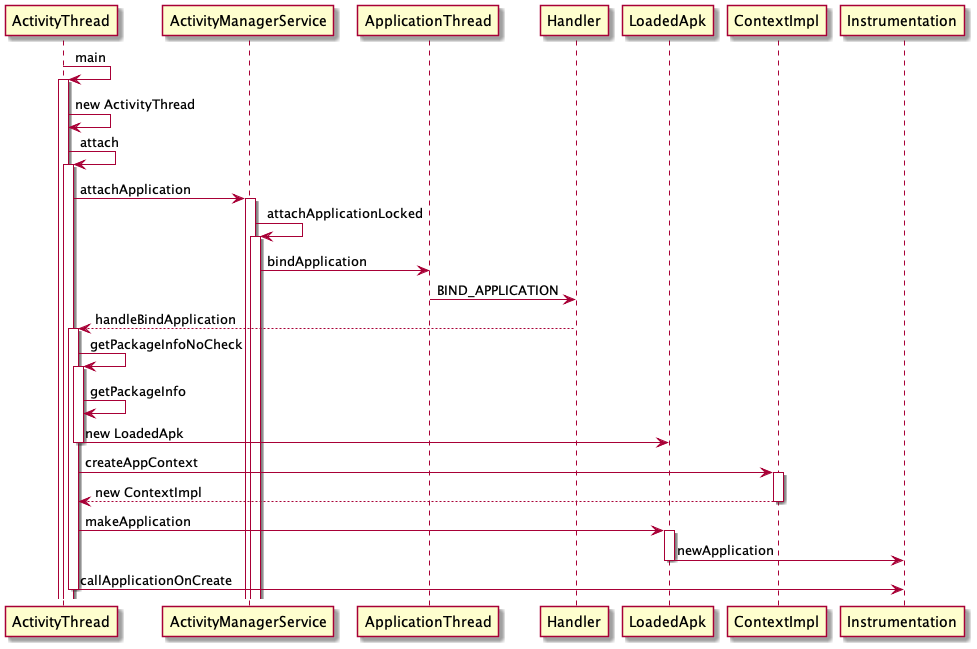

Application 启动流程
Contents
前言
在 Zygote 这篇文章中提到， Zygote 在收到创建新进程的请求之后，会创建新的进程，当时没有继续往下探索了，今天来探索一下 Application 是如何创建的。
Application 的创建
做 Android 开发的都知道，程序的入口是 ActivityThread 中的 main 方法，我们从这里入手，去探究 Application 的启动流程。
ActivityThread
/frameworks/base/core/java/android/app/ActivityThread.java
public static void main(String[] args) {
// 准备 main looper
Looper.prepareMainLooper();
// 创建 ActivityThread
ActivityThread thread = new ActivityThread();
// 告诉AMS 我启动好了
thread.attach(false, startSeq);
// 开启事件循环
Looper.loop();
}
main 方法中主要的逻辑都在 attach 中
attach
/frameworks/base/core/java/android/app/ActivityThread.java
final ApplicationThread mAppThread = new ApplicationThread();
private void attach(boolean system, long startSeq) {
sCurrentActivityThread = this;
mSystemThread = system;
// 应用走这个分支
if (!system) {
// 设置RuntimeInit.mApplicationObject
RuntimeInit.setApplicationObject(mAppThread.asBinder());
final IActivityManager mgr = ActivityManager.getService();
try {
// 和 AMS 通信，告诉AMS 我启动了
mgr.attachApplication(mAppThread, startSeq);
} catch (RemoteException ex) {
throw ex.rethrowFromSystemServer();
}
// ...
} else {
// ...
}
// ...
}
mAppThread 是 ApplicationThread 类型，它是 Binder 对象，代表了新创建的 App 。
IActivityManager 则是 AMS 的代理对象。这里不去深究，我们重点关注流程。
通过 IActivityManager 的 attachApplication 告诉 AMS 我（新App）创建好了。
AMS.attachApplication
/frameworks/base/services/core/java/com/android/server/am/ActivityManagerService.java
public final void attachApplication(IApplicationThread thread, long startSeq) {
synchronized (this) {
int callingPid = Binder.getCallingPid();
final int callingUid = Binder.getCallingUid();
final long origId = Binder.clearCallingIdentity();
attachApplicationLocked(thread, callingPid, callingUid, startSeq);
Binder.restoreCallingIdentity(origId);
}
}
AMS 在收到应用创建好的消息后调用 attachApplicationLocked
attachApplicationLocked
/frameworks/base/services/core/java/com/android/server/am/ActivityManagerService.java
private final boolean attachApplicationLocked(IApplicationThread thread,
int pid, int callingUid, long startSeq) {
ProcessRecord app;
long startTime = SystemClock.uptimeMillis();
long bindApplicationTimeMillis;
if (pid != MY_PID && pid >= 0) {
synchronized (mPidsSelfLocked) {
app = mPidsSelfLocked.get(pid);
}
if (app != null && (app.startUid != callingUid || app.startSeq != startSeq)) {
String processName = null;
final ProcessRecord pending = mProcessList.mPendingStarts.get(startSeq);
if (pending != null) {
processName = pending.processName;
}
final String msg = "attachApplicationLocked process:" + processName
+ " startSeq:" + startSeq
+ " pid:" + pid
+ " belongs to another existing app:" + app.processName
+ " startSeq:" + app.startSeq;
cleanUpApplicationRecordLocked(app, false, false, -1,
true /*replacingPid*/);
mPidsSelfLocked.remove(app);
app = null;
}
} else {
app = null;
}
thread.bindApplication(processName, appInfo, providers,
instr2.mClass,
profilerInfo, instr2.mArguments,
instr2.mWatcher,
instr2.mUiAutomationConnection, testMode,
mBinderTransactionTrackingEnabled, enableTrackAllocation,
isRestrictedBackupMode || !normalMode, app.isPersistent(),
new Configuration(app.getWindowProcessController().getConfiguration()),
app.compat, getCommonServicesLocked(app.isolated),
mCoreSettingsObserver.getCoreSettingsLocked(),
buildSerial, autofillOptions, contentCaptureOptions);
return true;
}
这里的 IApplicationThread 就是我们之前的 ApplicationThread 。
所以最后又通过 IApplicationThread 调回到新创建的应用程序中。
bindApplication
/frameworks/base/core/java/android/app/ActivityThread.java
public final void bindApplication(String processName, ApplicationInfo appInfo,
List<ProviderInfo> providers, ComponentName instrumentationName,
ProfilerInfo profilerInfo, Bundle instrumentationArgs,
IInstrumentationWatcher instrumentationWatcher,
IUiAutomationConnection instrumentationUiConnection, int debugMode,
boolean enableBinderTracking, boolean trackAllocation,
boolean isRestrictedBackupMode, boolean persistent, Configuration config,
CompatibilityInfo compatInfo, Map services, Bundle coreSettings,
String buildSerial, boolean autofillCompatibilityEnabled) {
if (services != null) {
if (false) {
// Test code to make sure the app could see the passed-in services.
for (Object oname : services.keySet()) {
if (services.get(oname) == null) {
continue; // AM just passed in a null service.
}
String name = (String) oname;
// See b/79378449 about the following exemption.
switch (name) {
case "package":
case Context.WINDOW_SERVICE:
continue;
}
if (ServiceManager.getService(name) == null) {
Log.wtf(TAG, "Service " + name + " should be accessible by this app");
}
}
}
// Setup the service cache in the ServiceManager
ServiceManager.initServiceCache(services);
}
setCoreSettings(coreSettings);
AppBindData data = new AppBindData();
data.processName = processName;
data.appInfo = appInfo;
data.providers = providers;
data.instrumentationName = instrumentationName;
data.instrumentationArgs = instrumentationArgs;
data.instrumentationWatcher = instrumentationWatcher;
data.instrumentationUiAutomationConnection = instrumentationUiConnection;
data.debugMode = debugMode;
data.enableBinderTracking = enableBinderTracking;
data.trackAllocation = trackAllocation;
data.restrictedBackupMode = isRestrictedBackupMode;
data.persistent = persistent;
data.config = config;
data.compatInfo = compatInfo;
data.initProfilerInfo = profilerInfo;
data.buildSerial = buildSerial;
data.autofillCompatibilityEnabled = autofillCompatibilityEnabled;
sendMessage(H.BIND_APPLICATION, data);
}
public void handleMessage(Message msg) {
switch (msg.what) {
case BIND_APPLICATION:
AppBindData data = (AppBindData)msg.obj;
handleBindApplication(data);
break;
// ...
}
}
在 bindApplication 中通过 Handler 机制把消息交给 handleBindApplication 处理。
handleBindApplication
/frameworks/base/core/java/android/app/ActivityThread.java
private void handleBindApplication(AppBindData data) {
data.info = getPackageInfoNoCheck(data.appInfo, data.compatInfo);
final ContextImpl appContext = ContextImpl.createAppContext(this, data.info);
// ...
Application app;
try {
app = data.info.makeApplication(data.restrictedBackupMode, null);
mInstrumentation.onCreate(data.instrumentationArgs); // 空实现
mInstrumentation.callApplicationOnCreate(app);
} finally {
if (data.appInfo.targetSdkVersion < Build.VERSION_CODES.O_MR1
|| StrictMode.getThreadPolicy().equals(writesAllowedPolicy)) {
StrictMode.setThreadPolicy(savedPolicy);
}
}
}
在 handleBindApplication 中会获取 LoadedApk 、创建 ContextImpl 、通过反射创建 Application 并调用其 onCreate 方法。我们一一来看一下。
getPackageInfoNoCheck
public final LoadedApk getPackageInfoNoCheck(ApplicationInfo ai,
CompatibilityInfo compatInfo) {
return getPackageInfo(ai, compatInfo, null, false, true, false);
}
private LoadedApk getPackageInfo(ApplicationInfo aInfo, CompatibilityInfo compatInfo,
ClassLoader baseLoader, boolean securityViolation, boolean includeCode,
boolean registerPackage) {
final boolean differentUser = (UserHandle.myUserId() != UserHandle.getUserId(aInfo.uid));
synchronized (mResourcesManager) {
WeakReference<LoadedApk> ref;
if (differentUser) {
ref = null;
} else if (includeCode) {
ref = mPackages.get(aInfo.packageName);
} else {
ref = mResourcePackages.get(aInfo.packageName);
}
LoadedApk packageInfo = ref != null ? ref.get() : null;
if (packageInfo == null || (packageInfo.mResources != null
&& !packageInfo.mResources.getAssets().isUpToDate())) {
packageInfo =
new LoadedApk(this, aInfo, compatInfo, baseLoader,
securityViolation, includeCode &&
(aInfo.flags&ApplicationInfo.FLAG_HAS_CODE) != 0, registerPackage);
if (mSystemThread && "android".equals(aInfo.packageName)) {
packageInfo.installSystemApplicationInfo(aInfo,
getSystemContext().mPackageInfo.getClassLoader());
}
if (differentUser) {
} else if (includeCode) {
mPackages.put(aInfo.packageName,
new WeakReference<LoadedApk>(packageInfo));
} else {
mResourcePackages.put(aInfo.packageName,
new WeakReference<LoadedApk>(packageInfo));
}
}
return packageInfo;
}
}
创建一个唯一的 LoadedApk ，并放入 mPackages 中。
createAppContext
/frameworks/base/core/java/android/app/ContextImpl.java
static ContextImpl createAppContext(ActivityThread mainThread, LoadedApk packageInfo) {
if (packageInfo == null) throw new IllegalArgumentException("packageInfo");
ContextImpl context = new ContextImpl(null, mainThread, packageInfo, null, null, null, 0,
null);
context.setResources(packageInfo.getResources());
return context;
}
private ContextImpl(@Nullable ContextImpl container, @NonNull ActivityThread mainThread,
@NonNull LoadedApk packageInfo, @Nullable String splitName,
@Nullable IBinder activityToken, @Nullable UserHandle user, int flags,
@Nullable ClassLoader classLoader) {
mOuterContext = this;
// ...
mMainThread = mainThread;
mActivityToken = activityToken;
mPackageInfo = packageInfo;
mSplitName = splitName;
mClassLoader = classLoader;
mResourcesManager = ResourcesManager.getInstance();
mBasePackageName = packageInfo.mPackageName;
ApplicationInfo ainfo = packageInfo.getApplicationInfo();
// ..
}
一通赋值，没啥好说的。
makeApplication
/frameworks/base/core/java/android/app/LoadedApk.java
public Application makeApplication(boolean forceDefaultAppClass,
Instrumentation instrumentation) {
if (mApplication != null) {
return mApplication;
}
Application app = null;
String appClass = mApplicationInfo.className;
if (forceDefaultAppClass || (appClass == null)) {
appClass = "android.app.Application";
}
try {
// 获取 ClassLoader
java.lang.ClassLoader cl = getClassLoader();
if (!mPackageName.equals("android")) {
initializeJavaContextClassLoader();
}
ContextImpl appContext = ContextImpl.createAppContext(mActivityThread, this);
// 创建 Application
app = mActivityThread.mInstrumentation.newApplication(
cl, appClass, appContext);
appContext.setOuterContext(app);
} catch (Exception e) {
if (!mActivityThread.mInstrumentation.onException(app, e)) {
throw new RuntimeException(
"Unable to instantiate application " + appClass
+ ": " + e.toString(), e);
}
}
mActivityThread.mAllApplications.add(app);
mApplication = app;
return app;
}
-
newApplication
public Application newApplication(ClassLoader cl, String className, Context context) throws InstantiationException, IllegalAccessException, ClassNotFoundException { Application app = getFactory(context.getPackageName()) .instantiateApplication(cl, className); app.attach(context); return app; } private AppComponentFactory getFactory(String pkg) { if (pkg == null) { return AppComponentFactory.DEFAULT; } if (mThread == null) { return AppComponentFactory.DEFAULT; } LoadedApk apk = mThread.peekPackageInfo(pkg, true); if (apk == null) apk = mThread.getSystemContext().mPackageInfo; return apk.getAppFactory(); }创建
Application然后调用其attach方法。
-
instantiateApplication
/frameworks/base/core/java/android/app/AppComponentFactory.javapublic @NonNull Application instantiateApplication(@NonNull ClassLoader cl, @NonNull String className) throws InstantiationException, IllegalAccessException, ClassNotFoundException { return (Application) cl.loadClass(className).newInstance(); }通过反射创建
Application。
-
attach
final void attach(Context context) { attachBaseContext(context); // 赋值给 mBase mLoadedApk = ContextImpl.getImpl(context).mPackageInfo; // 获取 LoadedApk }attach中做了两件事，把ContextImpl赋值给mBase，获取LoadedApk保存起来。
callApplicationOnCreate
/frameworks/base/core/java/android/app/Instrumentation.java
public void callApplicationOnCreate(Application app) {
app.onCreate();
}
最后在这里调用了 Application 的 onCreate 方法，如果你有在 AndroidManifest.xml 中配置，则会调用自定义的 Application 的 onCreate 方法。
总结
画个时序图，梳理一下 Application 的启动流程。
